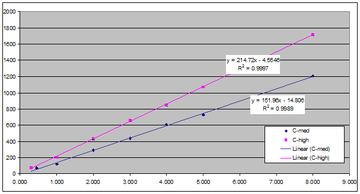

|
|
| Das Traffic Simulator Configuration Tool (TSCT) ist ein hilfreiches Werkzeug, um den NAM Unified Traffic Simulator (NAM-Simulator) mit der dazugehörigen Datenansicht nach Deinem Belieben zu konfigurieren. Nur Aspekte des Simulators, welche absolut sicher für das Spiel sind, können vom Spieler durch TSCT modifiziert werden; wenn Du diesen Anweisungen folgst, brauchst Du keine Befürchtungen wegen irgendwelcher Nebeneffekte zu haben, egal welche Einstellungen Du auch benutzt. Natürlich haben die Einstellungen, die im TSCT verfügbar sind, große Auswirkungen auf Dein Spiel und können das Einkommen Deiner Stadt verändern und Verkehrsstaus hervorrufen, welche wiederum weitere Effekte nach sich ziehen. Eine detaillierte Erklärung zu den einzelnen Feldern und den Verkehrssimulatoren im Allgemeinen findet sich hier (auf Englisch): A Guide to the Operation of the Traffic Simulator. Da der NAM-Simulator grundsätzlich eine Version des Simulator Z ist, kann TSCT dazu verwendet werden, den Simulator Z zu verändern, falls dies Dein aktueller Simulator ist. Das Ergebnis einer solchen Modifikation ist eine Version des NAM-Simulators, welcher komplett kompatibel zum Simulator Z ist. TSCT kann dazu verwendet werden, um Deine Version des NAM-Simulators auf die neueste Version zu aktualisieren, Einstellungen des NAM-Simulators und der dazugehörigen Datenansichten zu verändern, oder Deinen Verkehrssimulator auf einem der früheren Simulatoren einzustellen. Obwohl der NAM-Simulator normalerweise zusammen mit dem Rest des NAM verwendet wird, braucht es den NAM nicht. TSCT kann also verwendet werden, um den NAM-Simulator mit den optionalen Datenansichten für ein Spiel zu installieren, ohne dass der NAM installiert ist. Dieses Benutzerhandbuch soll dabei helfen, den richtigen Verkehrssimulator auszuwählen und zu modifizieren, wie alle Einstellungen des TSCT arbeiten und welche Effekte diese haben und der verschiedenen Möglichkeiten, die Änderungen zu speichern. Beginnen wird das Handbuch mit der Basis-Netzwerkkapazität und dem Netzwerk-Kapazitäts-Vervielfacher, welche die am meisten benutzten Einstellungen des TSCT sind. Danach werden die Einstellungen in der Reihenfolge beschrieben, in der sie im Hauptfenster von TSCT auftauchen. |
|
|
|
Wenn Du das erste Mal TSCT startest, versucht das Programm, Deinen NAM-Installationsordner zu finden. Bei Erfolg sucht es nach einem vorhandenen NAM-Simulator; wenn es einen gefunden hat, lädt es diesen und zeigt die Einstellungen im Hauptfenster an. Wenn es keinen NAM-Simulator in Deinem NAM-Installationsordner finden kann, zeigt es eine Nachricht diesbezüglich und lädt die Einstellungen für eine Standardversion des NAM-Simulators. |
|
|
|
Bitte beachte, dass - obwohl alle Änderungen an den Verkehrssimulatoren sich sofort im Spiel auswirken - die Zeit, bis sich die Änderungen im Verkehrsschema einer Stadt bemerkbar machen, stark variieren kann, je nachdem, welche Einstellung geändert wurde. Einige Einstellungen machen sich sofort im Verkehrsschema bemerkbar, andere zeigen sich, wenn die nächste Pendelzeitberechnung durchgeführt wird (etwa alle vier bis sechs Spielmonate), und manche Änderungen machen sich erst nach bis zu acht Jahren bemerkbar. Langfristige Änderungen kann man an der Form des Verkehrsmengen-Graphen ablesen. Wenn das Diagramm stabile Werte über einen Zeitraum von mindestens zwei Jahren anzeigt, kannst Du davon ausgehen, das sich die Änderungen in Deiner Stadt vollständig manifestiert haben. Basis-Netzwerkkapazität Wenn Du zu einer anderen Standardkapazität des NAM-Simulators wechseln willst, benutze die Auswahlbox "Basis-Netzwerkkapazität" und wähle die Kapazität, die Du verwenden möchtest. (Diese Box befindet sich links, etwas unterhalb der Mitte, mit blauer Schrift versehen.) Die Kapazitäten reichen von "Klassisch" (die niedrigste) bis "Ultra" (die höchste). Normalerweise wählt man "Klassisch" für ländliche Gegenden, während "Ultra" für Städte mit mehreren Millionen Einwohnern gedacht ist. Netzwerk-Kapazitäts-Vervielfacher Wenn du einen Kapazitätslevel verwenden willst, der zwischen den fünf Einstellungen liegt oder sogar außerhalb, dann kannst Du Dies über den Netzwerk-Kapazitäts-Vervielfacher tun. Diese Einstellung multipliziert die Basis-Kapazität mit dem Wert in der Einstellungsbox, welcher im Bereich von 0,1 bis 2,0 liegt. Wenn du den Wert änderst, werden sofort die Netzwerk-Kapazitäten geändert, die sich in der Zeile darüber befinden. Damit der Simulator geeignete Werte hat, kann das Verhältnis zwischen den verschiedenen Netzwerkkapazitäten nicht geändert werden. Allerdings variieren diese Verhältnisse leicht zwischen den Basis-Netzwerkkapazitäten, bei Zügen verhältnismäßig mehr als bei den anderen Netzwerkkapazitäten. Mit diesen Informationen kannst Du mit dem Netzwerk-Kapazitäts-Vervielfacher die Kapazität einstellen, die Du möchtest. |
|
|
|
Öffentliche Verkehrsmittel Diese Auswahlbox reguliert die Nutzung der Sims von öffentlichen Verkehrsmittel gegenüber dem Auto. Es stehen sechs verschiedene Möglichkeiten zur Verfügung, mit fünf vordefinierten Einstellungen von "Niedrig" bis "Sehr hoch". Die Auswahl "Mittel" entspricht der Einstellung von großen amerikanischen Städten mit mäßig genutzten öffentlichen Verkehrsmitteln, während die Auswahl "Hoch" vielen europäischen Städten entspricht, mit einem größeren Anteil an öffentlichem Nahverkehr. Die aktuelle Entscheidung eines Sims (W-§, W-§§, W-§§§) für ein Verkehrsmittel wird in den neun ausgegrauten Feldern für die fünf definierten Einstellungen angezeigt, die mit einer Auswahl sofort aktualisiert werden. Separate Autobahn-Busspur Dieses Feld erhöht etwas die Geschwindigkeit der Busse auf Autobahnen, so dass die Anzahl der Sims, die den Bus benutzen, erhöht wird. Diese Möglichkeit entspricht damit in etwa separaten Busspuren im wirklichen Leben. Die Automata-Anzeige wird jedoch nicht verändert, und so befinden sich weiterhin Autos auf allen Spuren, wenngleich die Anzahl der Busse auf den Autobahnen steigen sollte. Letztendlich werden die "Busspuren" also durch eine höhere Verkehrskapazität der Autobahnen erreicht. Park & Ride Dieses Feld ändert die Spielmechanik, so dass die Sims nicht mehr direkt mit dem Auto zu ihrem Arbeitsplatz fahren können. Stattdessen benutzen die Sims das Auto, um zu Parkplätzen zu fahren, von wo aus sie entweder den Rest zu Fuß laufen oder (wesentlich effektiver) öffentliche Verkehrsmittel benutzen. Im zweiten Fall musst Du Parkplätze in der Nähe von öffentlichen Verkehrsmittel bauen; sie am Rande von Wohngebieten zu platzieren kann sehr nützlich sein. Wenn diese Einstellung aktiviert ist und keine ausreichende Anzahl von Parkplätze gebaut wurden, werden die Sims den Weg zur Arbeit mit dem Auto fahren und feststellen, dass sie dieses nirgendwo abstellen können. Als Folge kommen sie nicht an ihren Arbeitsplatz, werden entlassen, verlassen die Stadt und hinterlassen ihr verlassenes Haus. Anteil des Busverkehrs am Verkehr Im Original Maxis Verkehrs Simulator nehmen Busse keinen Anteil am Verkehrsstau; die Wegfindung wurde nicht sicher genug eingestellt, damit dies funktioniert, wenngleich dies beabsichtigt war. Experimente zeigten, dass das Einschalten dieses Feldes im Original Simulator einfach nur den bestehenden Verkehrsstau erhöht, ohne aber signifikante Vorteile zu bringen. Im NAM-Simulator jedoch wurde die Wegfindung so eingestellt, dass sie sehr viel intelligenter ist als im Original Maxis Verkehrssimulator und daher ist es nun möglich, dass Busse ihren Beitrag am Verkehr haben können (wie jedes andere Verkehrsmittel auch) ohne Probleme zu verursachen. Als Resultat läuft die Verkehrssimulation im Ganzen sogar wesentlich besser dadurch. Der Grund dafür besteht darin, dass im Original Maxis Verkehrssimulator die Busse der letzte Ausweg als Verkehrsmittel darstellten; wenn Staus auf Strassen oder den meisten Schienen zu gross wurden, konnte der Verkehrssimulator mehr Sims in Busse stecken und dadurch den Stau willkürlich reduzieren, da alle Strassenteile eine unendliche Kapazität für Busse besitzen. Dies war sehr unrealistisch and führte dazu, dass die Sims ab und zu alles dem schnellen Transport mit dem Bus überliessen, um Staus zu vermeiden. Der aktuelle NAM-Simulator verhindert dieses Problem, indem er dem Busverkehr ermöglicht am Verkehr teilzunehmen. Allerdings sind nun Busse, wie alle anderen Fahrzeuge in SimCity auch, nur Ein-Personen-Fahrzeuge und so verlieren sie einiges ihrer Nützlichkeit, da sie nicht mehr effizienter als Autos sind, um Sims zu transportieren. Aber sie sind nach vor sinnvoll für die Sims, welche die öffentlichen Verkehrsmittel bevorzugen und noch viel wichtiger als das, sind sie sehr effizient, um Sims zu Hochgeschwindigkeits-Verkehrsmittel zu befördern (z.B. die verschiedenen Schienennetzwerke), wo keine Parkplätze existieren. Obwohl also das Setzen dieses Attributs gewisse Nachteile mit sich bringt, arbeitet der Verkehrssimulator besser und bietet eine bessere Verkehrssimulation, wenn dieses Feld aktiviert ist, wie es im Original NAM-Simulator der Fall ist. Andererseits mögen einige Leute das Verhalten des Original Maxis Verkehrssimulator oder wollen einfach nur die Benutzung von Bussen erhöhen. Für diese Leute kann das Feld deaktiviert werden und das Verhalten des Original Maxis Verkehrssimulator wird bezüglich den Bussen wiederhergestellt. Wenn dies jedoch gemacht wird, wird die Brauchbarkeit der gesamten Verkehrssimulation als Resultat eingeschränkt. Der Grad der Einschränkung ist nur minimal und so lange man die Auswirkungen versteht, sollte das Deaktivieren des Feldes keine grösseren Probleme verursachen. |
|
|
|
Monatliche Reisekosten pro Sim pro Feld Diese Felder geben an, wieviel Geld Deine Stadt einnimmt, wenn jemand das namentlich angegebene Transportmittel benutzt. Sie werden "Reisekosten" genannt, weil nur öffentliche Verkehrsmittel einen von Null abweichenden Wert haben. Wenn Du sie erhöhst oder erniedrigst, kannst Du damit die Reisekosten für jedes Transportmittel einstellen. Die Sims zahlen allerdings nicht wirklich diesen Betrag; die Stadt nimmt ihn nur ein. Dies ist eine Begrenzung der Simulation. Daher hat das Ändern der Reisekosten keinen Einfluss auf die Benutzung der Verkehrsmittel für einen Sim. Stattdessen kannst Du diese Einstellung verwenden, um mehr Einnnahmen in Deiner Stadt zu erzeugen, um das Spiel einfacher zu machen, oder um die Reisekosten für öffentliche Verkehrsmittel zu senken und damit das Spiel schwerer zu machen. Monatliche Kosten pro Netzwerkfeld Diese Felder legen fest, wieviel Deine Stadt für jedes Netzwerkfeld pro Monat an Unterhalt zahlen muss. Im Gegensatz zu Monatliche Reisekosten pro Sim pro Feld werden diese Änderungen sofort übernommen, wenn Du das nächste Mal das Spiel startest. Normalerweise sind diese Kosten Unterhaltskosten. Aber sie können auch als Baukosten gehandelt werden, da diese nicht im Verkehrssimulator verfügbar sind. In der Wirklichkeit zahlt kein Staat in bar für große Verkehrsprojekte, warum sollte Deine Stadt das tun? Stattdessen nimmt die Regierung sehr oft Kredite auf. So kannst Du festlegen, dass die monatlichen Kosten zur Abzahlung der Kredite verwendet werden. Und da diese Kreditzahlungen ewig andauern, sind sie monatlich zu entrichten (oder bis das Netzwerkfeld abgerissen wird). Mit einer Änderung der Felder im Bereich Monatliche Kosten pro Netzwerkfeld, kann das Spiel schnell einfacher oder schwieriger gemacht werden. Dir wird auffallen, dass die monatlichen Kosten für die RHW Netzwerkfelder auf null gesetzt sind und die Einstellung nicht geändert werden kann. Der Grund dafür ist, dass RHW auf einem unbenutzten Netzwerk basiert, welches unvollendet in SC4 von Maxis implementiert wurde. Eines dieser unvollendeten Dinge im Netzwerk sind die monatlichen Kosten pro Netzwerkfeld und obwohl dieser Wert intern im Verkehrs-Simulator gesetzt werden kann, wird sich das Spiel immer so verhalten, als ob der Wert null wäre. Kunden-Verkehrslärm-Faktor Dieses Feld legt fest, in welchem Umfang sich Verkehrslärm auf Kunden von Geschäften sowie die Anwohner von Wohngebieten auswirkt. Verkehrslärm wird von Fußgängern, Autos, Bussen und LKWs verursacht, die eine Straße benutzen (mit Ausnahme von Autobahnen). Verkehrslärm ist gut für das Gewerbe; die Anzahl der Kunden ist direkt proportional zum Umkehrwert dieses Faktors, das bedeutet, dass ein bestimmter prozentualer Anstieg oder Abfall dieses Werts über den gesamten Bereich des Faktors den gleichen Effekt auf die Stärke des Verkehrslärms hat. Die Anzahl der Kunden eines Gewerbebetriebs wird also nach der folgenden Formel berechnet: Kunden = Faktor * Verkehrssmenge "Verkehrsmenge" ist dabei der Maximalwert des Pendelverkehrs am Morgen auf den angrenzenden Feldern. Die Schwelle für "mittlere" Kunden liegt dabei bei 152, "viele" Kunden gibt es ab einem Wert von 215, und der Maximalwert ist 255. (Weiterführende Informationen finden sich hier (auf Englisch): A Guide to the Operation of the Traffic Simulator.) Der folgende Graph zeigt den Grenzwert für mittlere und hohe Kundenlevel gegenüber dem inversen des Faktor. (Der Graph wurde freundlicherweise von Trias zur Verfügung gestellt, daher in Englisch.)

Auf Wohngebiete hat Verkehrslärm den umgekehrten Effekt. Je stärker der Verkehrslärm, desto weniger attraktiv werden die anliegenden Wohngebäude (die Anzahl der Kunden beim Gewerbe entspricht direkt der jeweiligen Attraktivität). Jedoch ist dieser Effekt bei Wohngebieten deutlich schwächer ausgeprägt als beim Gewerbe, das heißt also, dass eine Steigerung dieses Werts sich auf jeden Fall positiv auf die Wirtschaft einer Stadt auswirkt. Dienstleistungsunternehmen profitieren stärker als Büros, und bei beiden Typen werden die höheren Wohlstandsstufen stärker beeinflusst als die niedrigen. Dies gilt wiederum auch bei den unterschiedlichen Wohlstandsstufen von Wohngebäuden, allerdings ebenfalls in geringerem Maße als beim Gewerbe Zwischenhalt-Effekt-Vervielfacher SimCity 4 simuliert Geschwindigkeitsreduktionen, verursacht durch Ampeln, Stopschilder und Abbiegeverkehr, indem die Netzwerkkapazität bei Kreuzungen und den anliegenden zwei Feldern reduziert wird. Dies bedeutet, dass an Kreuzungen mit viel Verkehr Staus entstehen, die den Verkehr bremsen. Begrenzt durch die Art, wie der Simulator arbeitet, kann der Verkehr nicht für weniger als sechs Sekunden gebremst werden, was kürzer als jede Wartezeit an einer Ampel ist. Trotzdem wird die Verkehrskapazität reduziert, was in der Verkehrsstau-Ansicht rot dargstellt wird. Standardmäßig hat der NAM-Simulator diesen Effekt so gesetzt, dass ein Stau nur an wirklich stark befahrenen Kreuzungen eintritt. Wo auch immer an Kreuzungen alles grün in der Verkehrsstau-Ansicht ist, wird der Verkehr nicht gebremst; effektiv wird der Verkehr hier also nicht beeinflusst. Pendelzeitgraph-Skalierungsfaktor Achtung: Der Pendelzeitgraph-Skalierungsfaktor ist nicht korrekt in SimCity 4 implementiert und so ist es unmöglich, diesen so zu konfigurieren, dass korrekte Werte ermittelt werden. Allerdings mögen viele Leute diesen Graphen benutzen, und im Einzelfall kann er hilfreiche Informationen geben. Pendelweg-Maximalzeit Diese Feld spzifiziert die maximale Zeit in Minuten, die
einem Sim erlaubt wird den Arbitszplatz im morgendlichen Verkehr zu erreichen.
(Die abendliche Rückfahrt hat niemals irgendein Zeitlimit.) Dies ist das
einzigste Feld, das im Traffic Simulator Configuration Tool ausgegraut ist und
das rührt daher, dass der Wert in diesem Feld extrem negative Konsequenzen
haben kann, wenn er zu tief eingestellt wird. Das Feld kann aktiviert werden,
indem das Kontrollfeld daneben selektiert wird. Der Standardwert ist 600, welcher
in 10 Stunden umgewandelt wird und sehr lang zu sein scheint und einen
unmöglichen langen Arbeitstag für einen Sim bedeuten würde. Wie
auch immer vergeht die Zeit im Spiel nicht so, wie man es erwarten würde,
wenn der Verkehr in Nachbarstädte fliesst; dieser Effekt wurde im
vorangegangenen Kapitel, Pendelzeitgraph-Skalierungsfaktor diskutiert.
Bevor der Wert für die perfekte Wegfindung gefunden wurde, verwendete man
einen Wert in dieser Höhe für eine effektive Zwischenstädtische
Bewegung. Obwohl dies nicht mehr der Fall ist, höhere Werte wie 600 zu
verwenden, scheint es einen geringen positiven Effekt auf die Stadtgesundheit
ohne negativen Effekt zu haben. Den Wert über 600 zu erhöhen scheint
keinen weiteren Effekt zu haben.
Fahrzeug-Luftverschmutzung Diese Feld spezifiziert den Anteil der normalen Verkehrsverschmutzung, wenn die Verordnung "Saubere Luft" aktiviert ist. Normalerweise beeinflusst die Verordnung die Fahrzeug-Luftverschmutzung überhaupt nicht; und auch die Auto-Emmisions-Reduzierung hat keine Auswirkung. Stattdessen verändern diese Verordnungen alle anderen Typen der Luftverschmutzung außer der Fahrzeug-Luftverschmutzung. Jede der Verordnungen reduziert die Luftverschmutzung um 10%; der Effekt dieser beiden Verordnungen ist kumulativ. |
|
|
|
Verwende neue U-Bahn-Ansicht Beginnend mit dem NAM vom Juni 2009 zeigt die U-Bahn-Ansicht (in der Du U-Bahnen baust) automatisch die Verkehrsmenge für die U-Bahnen in den Farben an, die auch in der Verkehrsmengen-Ansicht verwendet werden. Sie zeigt auch grundsätzlich alle U-Bahn-Stationen an. Dies kann sehr nützlich sein, wenn entschieden werden muss, wo neue U-Bahnen gebaut werden sollen. Allerdings möchten einige Leute diese Ansicht nicht. Ist das Feld deaktiviert, wird die neue U-Bahn-Ansicht nicht verwendet. Verwende neue U-Bahn-Gebäude-Ansicht Beginnend mit dem NAM vom Juni 2009 wurde die U-Bahn-Gebäude-Ansicht (in der Du U-Bahn-Stationen baust) dramatisch geändert. Die größte Änderung in der neuen U-Bahn-Gebäude-Ansicht ist, dass Gebäude nicht angezeigt werden, so dass es einfacher ist, U-Bahn-Stationen in dichten Bereichen der Stadt zu bauen. Um zur originalen U-Bahn-Gebäude-Ansicht von Maxis zurückzukehren, muss dieses Feld deaktiviert sein. Zeige U-Bahn-/Hochbahn-/Tram-Dichte Diese Feld ist nur verfügbar, wenn Verwende neue U-Bahn-Gebäude-Ansicht aktiviert ist; ansonsten ist es ausgegraut. Wenn diese Option aktiviert ist, werden U-Bahn-, Hochbahn- und Tram-Dichten angezeigt, wie in der Verkehrsmengen-Ansicht. Verwende neue Zonen-Ansicht Beginnend mit dem NAM vom Juni 2009 wurde die Zonen-Ansicht so verändert, dass nicht nur die Zonen angezeigt werden. Es wird nun alles angezeigt, was in in der U-Bahn-Gebäude-Ansicht angezeigt wird, außer der Eisenbahn-Verkehrsmenge. Um die originale Zonenansicht von Maxis wiederherzustellen, muss dieses Feld deaktiviert werden. Zeige U-Bahn-Linien Diese Feld modifiziert die Zonen-Ansicht; wenn die Option Verwende neue Zonen-Ansicht deaktiviert ist, ist dieses Feld ausgegraut. Normalerweise werden die U-Bahn-Linien in der neuen Zonen-Ansicht angezeigt. Wenn dieses Feld deaktiviert ist, werden diese nicht angezeigt. Zeige Props Dieses Feld modifiziert ebenfalls die neue Zonen-Ansicht; wenn die Option Verwende neue Zonen-Ansicht deaktiviert ist, ist dieses Feld ausgegraut. Normalerweise werden Props in der Zonen-Ansicht angezeigt. Wenn die Option deaktiviert ist, werden sie nicht angezeigt. |
|
|
|
| Wenn Du mit den Änderungen am Simulator fertig bist, dann klicke auf die "Speichern"-Schaltfläche. Der veränderte Simulator wird in dem Ordner gespeichert, aus dem er zuvor geladen wurde. Wenn irgendwelche Datenansichten verändert wurden, werden diese automatisch mit gespeichert. Wenn Du den Netzwerk-Kapazitäts-Vervielfacher von dem Standardwert 1,0 verändert hast, werden automatisch neue Verkehrsmengen-Ansichten bei der Speicherung generiert. Wenn bereits ein Standard-Verkehrssimulator im Ordner vorhanden ist, wirst Du gefragt werden, ob dies Dein aktiver Verkehrssimulator-Ordner ist (normalerweise Dein NAM-Installationsordner). Wenn Du mit "Ja" antwortest, werden existierende Verkehrssimulatoren gelöscht; wenn ein modifizierter Simulator existiert (z. B. der mit diesem Programm erzeugt wurde), wird er umbenannt mit der Erweiterung ".sav" und eventuell einer fortlaufenden Nummer. Dasselbe passiert, wenn die Verkehrsmengenansicht geändert wurde. Wenn Du keinen NAM-Ordner oder einen bestehenden Simulator zum Ändern angegeben hast, wirst Du nach Drücken der "Speichern"-Schaltfläche mit einem Dateiauswahl-Dialog aufgefordert, den Ordner zu wählen, in dem die Dateien gespeichert werden sollen. Du kannst auch "Speichern unter..." im Datei-Menü benutzen, um einen anderen Ordner zum Speichern zu verwenden. Wenn Du Deinen Simulator modifizierst und feststellst, dass diese Änderungen nicht gewollt sind, dann klicke auf die "Reset"-Schaltfläche. Damit kannst Du alle Felder auf den Stand setzen, als der Simulator geladen oder erzeugt wurde, oder auf die Standard-Werte. Backups Wenn die automatischen Backups aktiviert sind, wird bei jeder Änderung automatisch eine Sicherheitskopie des jeweils geladenen Verkehrssimulators angelegt (siehe dazu auch den Abschnitt "Konfiguration" weiter unten). Nur Dateien, deren Standardwerte geändert wurden, werden gesichert, da die Standard-Simulatoren sehr leicht durch das Auswählen der entsprechenden Optionen in TSCT und aus diesem Benutzerhandbuch wiederhergestellt werden können. Alle Sicherheitskopien werden im Unterordner Backup des TSCT-Installationsordners gespeichert, mit der Dateiendung .sav anstelle der standardmäßigen .dat-Erweiterung. Falls mehr als ein Backup angelegt werden soll (die Standardeinstellung ist 5), wird an die älteren Backups jeweils noch eine Zahl angehängt, also z. B. .sav1 für die nächstältere Datei. Die Datei mit der Erweiterung .sav ohne angehängte Zahl ist dabei immer das jüngste Backup. Falls mehr als die eingestellte Anzahl von Backups vorhanden sind, werden ältere Dateien automatisch gelöscht. Ob die Backup-Funktion eingeschaltet ist, kannst Du an der entsprechenden Anzeige links unten neben dem Button zum Speichern erkennen. Ist sie eingeschaltet, erscheint der Text "Auto-Backup: Ein", ansonsten wird "Auto-Backup: Aus" angezeigt. |
|
|
|
TSCT kann dazu verwendet werden, um einen Traffic Simulator zu emulieren, der relativ genau den Simulatoren aus älteren NAM-Veröffentlichungen entspricht, speziell den Simulatoren A bis E und deren Varianten (da TSCT den Kern von Simulator Z als Basis benutzt, ist für diesen Simulator keine Emulation erforderlich). Dieser Abschnitt beschreibt, welche Einstellungen nötig sind, um eine solche Emulation zu erreichen. Wenn Du verschiedene Einstellungen ausprobierst und später feststellst, dass sie in Deiner Stadt nicht funktionieren, ändere sie einfach wieder; es sollte kein dauerhafter Schaden bei der Benutzung anderer Werte zurückbleiben, abgesehen davon, dass es immer eine Weile dauert, bis sich die neuen Werte eingependelt haben. Für alle älteren Simulatoren sollte die Option Busse
tragen zum Verkehr bei deaktiviert, die
Fahrzeug-Luftverschmutzung auf den Wert von 0.90, und der Pendelzeitgraph-Skalierungsfaktor auf den Wert von 1.000 gesetzt werden. |
|
|
|
Das Programm hat eine Reihe von Konfigurationsoptionen, die im Menü "Extras" aufgerufen werden können. Der Einstellungen-Dialog erlaubt die folgenden Konfigurationsmöglichkeiten: Sprache Hier kannst Du eine Sprache für die Benutzeroberfläche und das Benutzerhandbuch einstellen. Im Moment wird Englisch und Deutsch unterstützt. Auto-Backup Diese Einstellung spezifiziert die Anzahl der Backup-Versionen Deines Verkehrssimulators und der Statistik-Ansichts-Dateien, die TSCT beibehält. Ein Wert von Null bedeutet, dass keine Backups angelegt werden. Weitere Informationen hierzu finden sich im Abschnitt Backups weiter oben. GUI (Skin) Diese Einstellung beeinflusst die Darstellung der Benutzeroberfläche des Programms. Debug Modus (Log in Datei) Wenn aktiviert, wird eine Debug-Logdatei in den Unterordner temp des TSCT-Installationsordners angelegt. Willkommensdialog Wenn aktiviert, ruft diese Option beim nächsten Programmstart den Willkommensdialog auf. Er wird jeweils nur einmal dargestellt, wenn die Option später nicht wieder aktiviert wird. Verkehrssimulator-Ordner Dies ist ein Informationsfeld, welches den aktuell von TSCT benutzten Ordner anzeigt, in dem das Programm die Verkehrssimulatoren und Statistik-Ansichts-Plugins lädt und wieder speichert. |